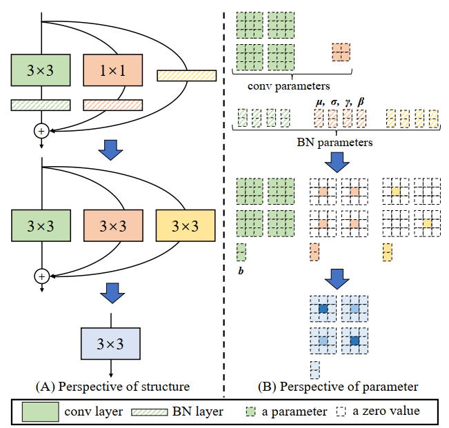
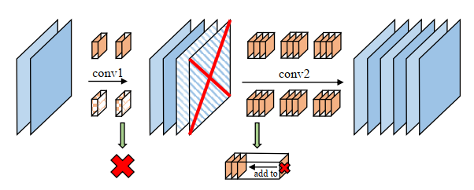

Xiaohan Ding
Xiaohan Ding (丁霄汉) is a senior researcher at Tencent AI Lab (Shenzhen, China) since 2022. He obtained Ph.D from Tsinghua University supervised by Prof. Guiguang Ding.
Email /
Google Scholar /
Zhi Hu /
DBLP
News
02/2023, RepOptimizer has been accepted by ICLR 2023!
10/2022, The methodology of Re-parameterization have been used in PP-YOLOE+, which outperformed YOLOv6 and YOLOv7!
08/2022, RepVGG and the methodology of Re-parameterization (including our recently proposed RepOptimizer) have been used in both YOLOv6 and YOLOv7!
07/2022, the Structural Re-parameterization Universe has got around 5000 stars on GitHub.
08/2021, two papers of the Structural Re-parameterization Universe (RepMLPNet and RepLKNet) has been accepted by CVPR 2022.
08/2021, one paper of the Structural Re-parameterization Universe has been accepted by ICCV 2021.
06/2021, RepVGG ranks 5th on Twitter #CVPR hot trends during the conference!
03/2021, two papers of the Structural Re-parameterization Universe have been accepted by CVPR 2021.
Research Projects
I mostly focus on foundation model (i.e., backbone) design and optimization. Some of my works have been used as fundamental tools in academia and industry. I take great pleasure in introducing the Structural Re-parameterization Universe to you.
The Structural Re-parameterization Universe

Representative: RepVGG GitHub (2800 stars) | Paper
I proposed Structural Re-parameterization, a methodology that converts a structure into another via transforming the parameters. I started to investigate into it since ACNet (ICCV 2019) and continued to work on it during my internship with Dr. Xiangyu Zhang at MEGVII Technology. I started to use Structural Re-parameterization to term this methodology since RepVGG (CVPR 2021) and Diverse Branch Block (CVPR 2021). In the following works, I broadened and deepened this research direction.
ACNet (ICCV 2019): a building block to improve CNN without any extra inference costs.
RepVGG (CVPR 2021): proposed Structural Re-parameterization and used it to build a super simple but powerful architecture.
DBB (CVPR 2021): proposed a more powerful building block and analyzed why Strutural Re-parameterization worked.
ResRep (ICCV 2021): a state-of-the-art channel pruning method using Structural Re-parameterization.
RepMLPNet (CVPR 2022): vision MLP with local priors injected with Structural Re-parameterization. Still no inference costs!
RepLKNet (CVPR 2022): studied very large kernel (e.g., 31x31) design in modern CNNs. Outperformed Transformers on segmentation and object detection. Used Structural Re-parameterization to further improve the performance. My favorite work of 2022.
RepOptimizer: generalized the idea to Gradient Re-parameterization, which facilitates efficient training of very simple (RepOpt-VGG, which is plain even during training) and quantization-friendly models. Already used in YOLOv6 and deployed in business.
Model Compression and Acceleration

From 2017 to 2019, I was doing research at Tsinghua University and published several papers on model compression and acceleration. Please see my Google Scholar Profile.
Three Representative Research Papers
RepVGG: Making VGG-style ConvNets Great Again
Xiaohan Ding, Xiangyu Zhang, Ningning Ma, Jungong Han, Guiguang Ding, Jian Sun
CVPR 2021 | paper | code and models
Scaling Up Your Kernels to 31x31: Revisiting Large Kernel Design in CNNs
Xiaohan Ding, Xiangyu Zhang, Yizhuang Zhou, Jungong Han, Guiguang Ding, Jian Sun
CVPR 2022 | paper | code and models
Three Selected Awards
2022, outstanding Ph.D dissertation of Tsinghua University
2021, Intel Scholarship
2019, Baidu Scholarship
Many thanks go to Dr. Yunhe Wang, who shared the source code of
his homepage.